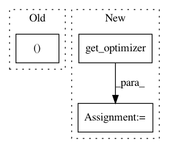

72ddc9de29a7987330720927d82a7769f3a82c5c,opennmt/runner.py,Runner,update_vocab,#Runner#Any#Any#Any#,263
Before Change
cur_checkpoint = self._init_model(config)
cur_checkpoint.restore()
model, optimizer = cur_checkpoint.model, cur_checkpoint.optimizer
model.create_variables(optimizer=optimizer)
self._config["model_dir"] = output_dir
After Change
self._config["data"]["target_vocabulary"] = tgt_vocab
new_config = self._finalize_config()
new_model = self._init_model(new_config)
new_optimizer = new_model.get_optimizer()
new_checkpoint = checkpoint_util.Checkpoint.from_config(
new_config, new_model, optimizer=new_optimizer)
new_model.create_variables(optimizer=new_optimizer)
In pattern: SUPERPATTERN
Frequency: 4
Non-data size: 3
Instances
Project Name: OpenNMT/OpenNMT-tf
Commit Name: 72ddc9de29a7987330720927d82a7769f3a82c5c
Time: 2020-03-30
Author: guillaumekln@users.noreply.github.com
File Name: opennmt/runner.py
Class Name: Runner
Method Name: update_vocab
Project Name: OpenNMT/OpenNMT-tf
Commit Name: 72ddc9de29a7987330720927d82a7769f3a82c5c
Time: 2020-03-30
Author: guillaumekln@users.noreply.github.com
File Name: opennmt/runner.py
Class Name: Runner
Method Name: average_checkpoints
Project Name: Scitator/catalyst
Commit Name: 23307f66ff16079cf7e15b005f83f71b32b82fde
Time: 2020-09-28
Author: scitator@gmail.com
File Name: catalyst/core/runner.py
Class Name: IRunner
Method Name: _get_experiment_components